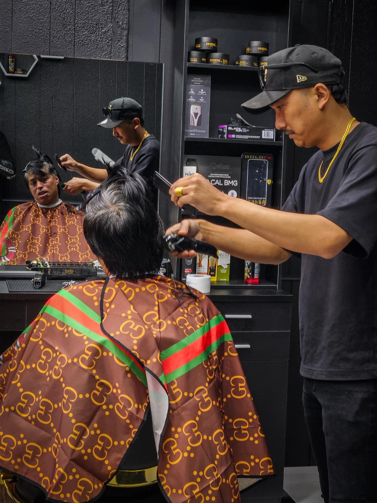
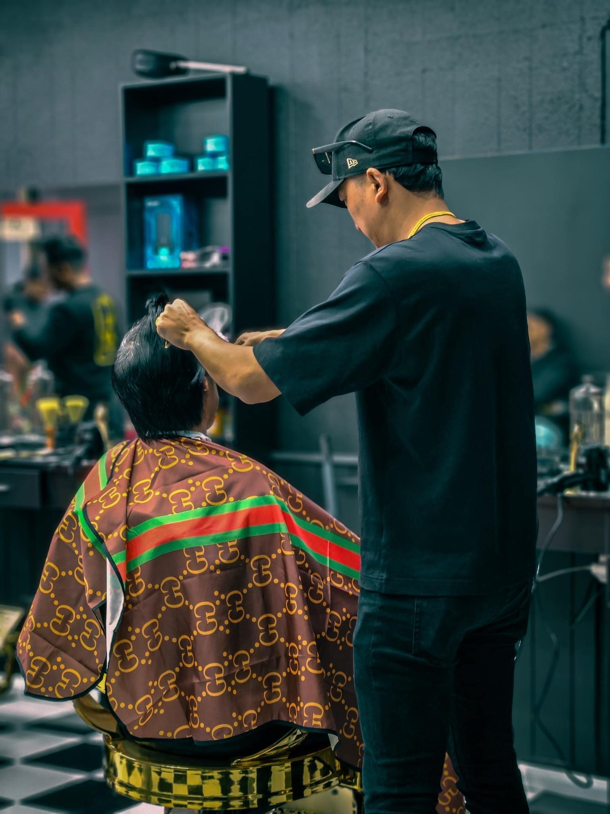

Lazy Barber: Your Destination for Effortless Grooming
At Lazy Barber, we believe that grooming should be convenient, enjoyable, and above all, effortless. Nestled in the heart of Granville, our Nepalese-owned barber shop brings a unique blend of traditional expertise and modern convenience to the grooming experience.

Meet Our Team
At Lazy Barber, our team is our pride and joy. Comprised of talented barbers who are passionate about their craft, we strive to deliver exceptional results with every service. With a keen eye for detail and a commitment to customer satisfaction, our barbers are here to ensure that you leave our shop looking and feeling your absolute best.
